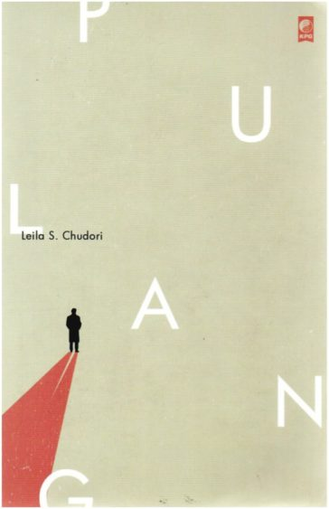

Perpustakaan Kelvin adalah tempat di mana petualangan pengetahuan dimulai. Dengan koleksi buku yang luas, sumber daya digital yang terkini, dan lingkungan belajar yang ramah, kami mengundang Anda untuk menjelajahi dunia pengetahuan yang tak terbatas.
Dari buku teks hingga literatur fiksi, dari riset ilmiah hingga karya seni, Perpustakaan Kelvin memiliki segalanya untuk memenuhi kebutuhan pembelajaran dan eksplorasi kreatif Anda. Dibantu oleh kurasi yang cermat, kami menjamin bahwa Anda akan menemukan inspirasi dan pemahaman yang mendalam di setiap langkahnya.
Bergabunglah dengan kami dan temukan dunia pengetahuan yang luas dan tak terbatas di Perpustakaan Kelvin!
Koleksi Buku

Laut Bercerita
Kisah ini merupakan kisah nyata dari pengalaman seorang aktivis yang menghilang pada tahun 1998, diculik, kemudian dikembalikan 9 orang dan dinyatakan 13 orang hilang. Novel ini juga mendidik karena mengandung pengetahuan tentang keadilan sosial, prinsip demokrasi, dan sejarah pergerakan untuk mendukung orde baru.

The Chronicles Of Narnia #1: The Magician`s Nephew
Narnia, tanah tempat para Hewan berbicara, di mana pohon bisa berjalan, di mana pertempuran sedang berlangsung, di mana dunia baru lahir. Dalam buku ini, tidak seperti dalam buku lain dari seri Narnia, singa, Singa, hadir untuk menyelamatkan mereka dan menciptakan dunia baru—Narnia.

Pulang
Paris, Mei 1968 Ketika gerakan mahasiswa berkecamuk di Paris, Dimas Suryo, seorang eksil politik Indonesia, bertemu Vivienne Deveraux, mahasiswa yang ikut demonstrasi melawan pemerintahan Prancis. Pada saat yang sama, Dimas menerima kabar dari Jakarta; Hananto Prawiro, sahabatnya, ditangkap tentara dan dinyatakan tewas.

Harry Potter dan Piala Api (Harry Potter and The Goblet of Fire)
Di Hogwarts, Profesor Dumbledore mengumumkan bahwa Alastor "Mad-Eye" Moody menjadi guru Pertahanan Terhadap Ilmu Hitam yang baru. Hogwarts akan menjadi tuan rumah Turnamen Triwizard. Hanya para penyihir berusia tujuh belas tahun ke atas yang boleh ikut—namun Harry tetap berkhayal menjadi juara dalam kompetisi itu.